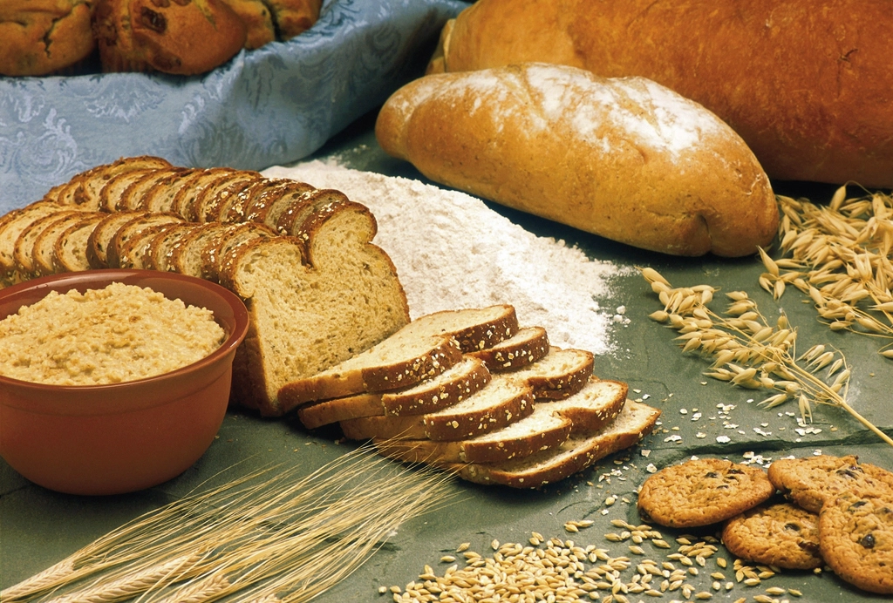
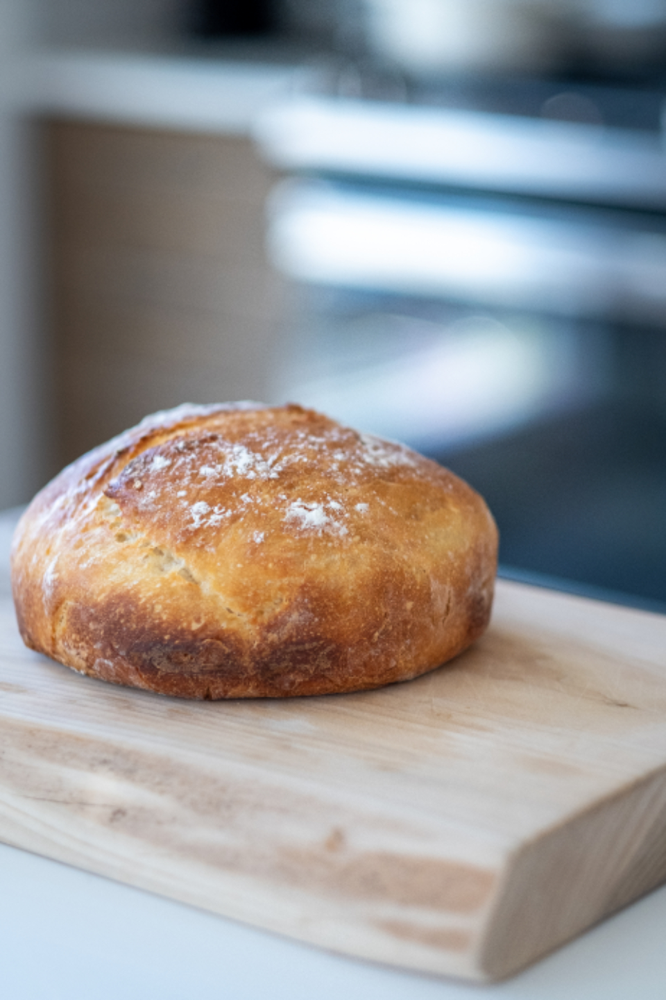
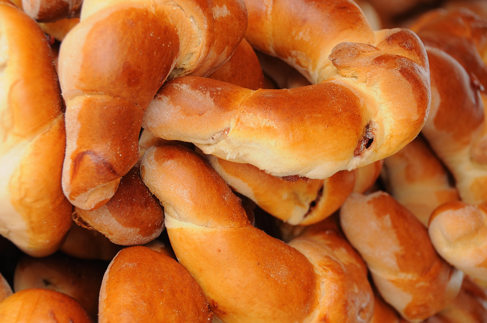

学校帰りの親子のイメージ
学校帰りに子どもと一緒に立ち寄るのが、ちょっとした楽しみです。焼きたてのデニッシュを「今日のおやつ」に選ぶ時間が、親子にとって小さなご褒美になっています。
Petit Goûter
プティ グーテ
瀬戸内海を望む香川県観音寺市の一角で、焼きたてのパンをお届けする小さな店、プティ グーテ(Petit Goûter)。学校帰りのおやつにも、日々の食卓にも寄り添う一枚を探しに、どうぞお立ち寄りください。
「プティ グーテ(Petit Goûter)」は、フランス語で「小さな、4時のおやつ」を意味する言葉です。学校帰りの子どもたちが待ちわびる、ちょっとした軽い間食の時間——その響きにちなんで、当サイトでは、学校や仕事帰りにふらっと立ち寄っていただけるような、小さなおやつ時間のイメージを大切にしています。
こだわりをもっと読む香ばしい匂いに包まれて並ぶ、できたてのパンたち。食パンやハード系のパンから、おやつにうれしいデニッシュ、日々の食卓を支える惣菜パンまで、幅広くご用意しています。



学校帰りの親子のイメージ
学校帰りに子どもと一緒に立ち寄るのが、ちょっとした楽しみです。焼きたてのデニッシュを「今日のおやつ」に選ぶ時間が、親子にとって小さなご褒美になっています。